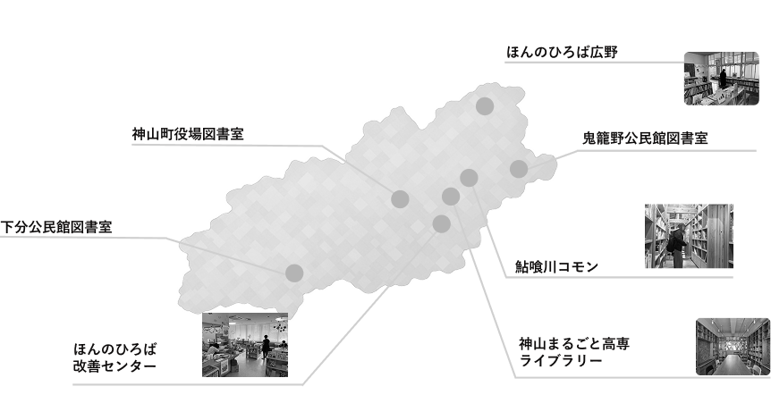

Learning
この制作を通して、サービスは画面だけでなく、実際の場所や人の行動とつながっていることを学びました。フィールドで得た声をUIに反映することで、より使いやすい体験に近づけられると感じました。
本をきっかけに、地域の人や場所との接点をつくるWebアプリです。お気に入りの本や、まちの中にある本棚を通して、暮らしの中にある小さな関心を共有できる体験を目指しました。
地域の中には、本を通して人の関心や考え方が見える場があります。一方で、どこに本があり、どんな本が置かれているのかは、外からは見えにくいことがあります。ホンノバでは、本棚をまちの情報として見つけやすくし、人と場所をゆるやかにつなげることを考えました。

ユーザーの課題
本のある場所や、まちの中の本棚を探しづらい。
本棚を置く側の課題
本棚の存在や、置いている本の魅力を届けにくい。
まちの課題
本をきっかけにした小さな交流が、まだ見えにくい。
ホンノバでは、本棚を単なる場所としてではなく、その人や場所の関心が見える小さな入口として捉えました。本棚を見つける、気になる本を知る、実際に行ってみるという流れを通して、まちの中にある偶然の出会いを増やすことを目指しました。
Service Design
まちにある本棚や、本棚に置かれている本の存在を知る。
気になる本棚や本を探し、行きたい場所を見つける。
本棚の情報、置かれている本、場所の雰囲気を見る。
実際にその場所へ行き、本や本棚に触れる。
本をきっかけに、場所や人との新しい接点を見つける。

神山町にある本棚を調査し、本がある場所や本棚に関わる人の声を集めました。
Webアプリとして見せ方を設計し、検索や本棚一覧などの導線を整理しました。
UI改善やフィールドテストを通して、使いやすさと情報の伝わり方を見直しました。
ユーザーが本棚を見つけやすくなるよう、検索、一覧、詳細画面の流れを整理しました。情報量が多くなりすぎないように、必要な情報を段階的に見せることを意識しています。
この制作を通して、サービスは画面だけでなく、実際の場所や人の行動とつながっていることを学びました。フィールドで得た声をUIに反映することで、より使いやすい体験に近づけられると感じました。
今後は、本棚の情報をより見つけやすくし、まちの中で本をきっかけにした出会いが生まれるよう、検索機能や投稿機能、イベントとの連携をさらに改善していきたいです。